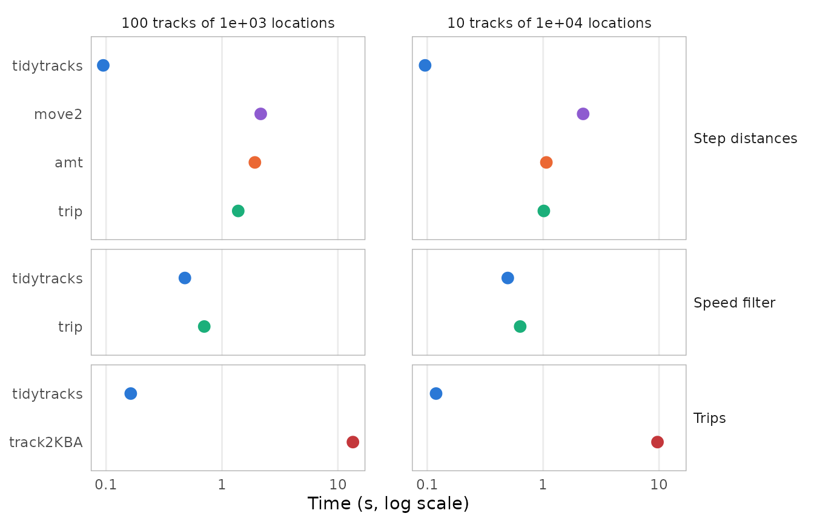
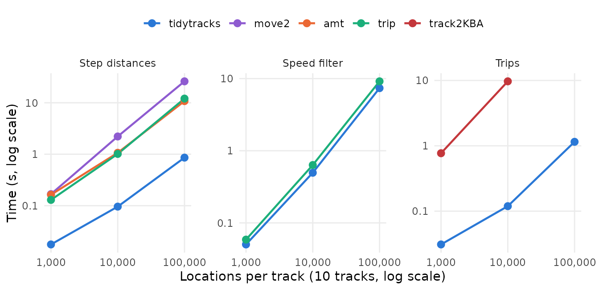
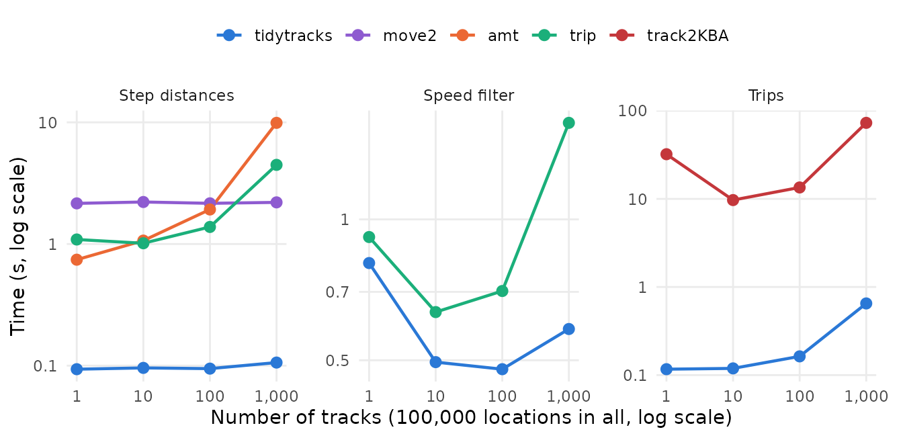
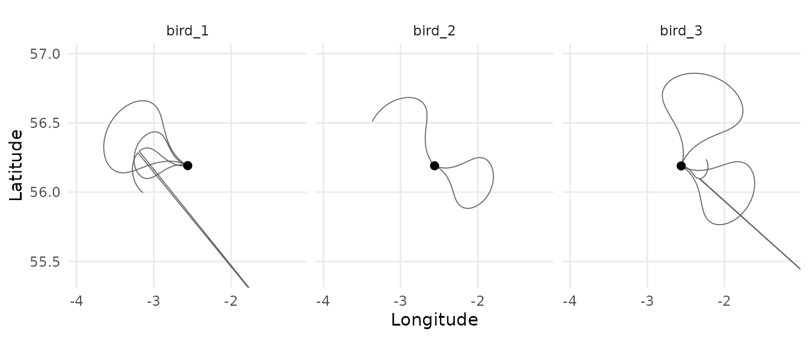

tidytracks works on move2 objects, and many
of its functions do what other packages for tracking data also do. This
article compares how long tidytracks takes for three common
operations with other packages that offer them:
- the distance between consecutive locations of each track (step
lengths), with
move2(Kranstauber et al. 2024),amt(Signer et al. 2019) andtrip(Sumner 2011); - the speed filter of McConnell et al. (1992), with
trip, from whichtidytracksported it; - splitting the tracks of a central place forager into trips away from
its nest, with
track2KBA(Beal et al. 2021).
It also checks that, given the same settings, they give the same results, and shows how the time of each operation grows with the length and the number of the tracks.
The results come first. The second part, How the benchmark was run, describes the simulated tracks and the benchmark, with their code, and how to run it again.
Results
Summary
- Given the same settings, the packages give the same results, except at the ends of some tracks and trips, and up to the differences between geodesic distances and distances on a sphere.
-
tidytracksis the fastest for the three operations: for the step distances, the other packages take 11 to 23 times as long, andtrack2KBAtakes 81 to 83 times as long to split the tracks into trips. Its speed filter runs the same algorithm as that oftrip, which takes 1.3 to 1.5 times as long. - The time of
tidytracksgrows in proportion to the number of locations. It computes the step distances of all the tracks at once, and its speed filter and trip splitting add less than a millisecond per track (0.089 ms and 0.54 ms), whereasamtadds 8.9 ms per track to the step distances. This overhead matters only for data sets with many short tracks.
The packages are compared on two data sets of simulated tracks, as in the home range benchmark: many tracks of medium length (100 tracks of 1,000 locations), and a few long tracks (10 tracks of 10,000 locations), with the same settings in all the packages. Two series of data sets then show how the times grow with the length and the number of the tracks (see The data sets and Running the operations).
Do the packages give the same results?
| Operation | Package | Difference from tidytracks |
|---|---|---|
| Step distances | move2 | up to 0.35% (on a sphere) |
| Step distances | amt | up to 0.35% (on a sphere) |
| Step distances | trip | none (up to rounding errors) |
| Speed filter | trip | 12 of 1,429 flagged locations, in 2 tracks |
| Trips | track2KBA | only at the ends of trips (1,317 locations) and of tracks (5 trips) |
-
Step distances:
move2andamtmeasure the steps on a sphere rather than on the ellipsoid (withsf::sf_use_s2(FALSE), they give the same distances astidytracks). -
Speed filter: the locations flagged differently are
in tracks whose second-to-last location is an outlier.
tidytracksthen flags the locations before the outlier, one at a time, until the speeds to the outlier are low enough, whereastrip(in version 1.10.0) flags only the location just before it, as it computes the speeds between locations two steps apart wrongly for longitudes and latitudes. Neither package can flag the first two and last two locations of a track, whose speeds are not computed by the filter: 6 of the 1,398 simulated outliers are among them, and other locations of the same tracks are flagged instead (check_first_last = TRUEmakestidytracksalso check the first and last locations). -
Trips:
track2KBAincludes in each trip the first location back within 5 km of the nest, and, when the last location of a track is the first one beyond 5 km of the nest,tidytracksmakes it a trip of its own (an incomplete one), whereastrack2KBAdoes not.
How long do they take?

| Data set | Operation | tidytracks | move2 | amt | trip | track2KBA |
|---|---|---|---|---|---|---|
| 100 tracks of 1e+03 locations | Step distances | 0.095 | 2.2 | 1.9 | 1.4 | |
| 100 tracks of 1e+03 locations | Speed filter | 0.48 | 0.7 | |||
| 100 tracks of 1e+03 locations | Trips | 0.16 | 13 | |||
| 10 tracks of 1e+04 locations | Step distances | 0.096 | 2.2 | 1.1 | 1 | |
| 10 tracks of 1e+04 locations | Speed filter | 0.5 | 0.63 | |||
| 10 tracks of 1e+04 locations | Trips | 0.12 | 9.7 |
-
Step distances:
tidytracksis the fastest:move2takes 23 times as long,amt11 to 20 times andtrip11 to 15 times.tidytrackscomputes the distances of all the tracks at once (withgeodist), whereasamtandtripmeasure each track in turn. -
Speed filter:
tidytracksandtriprun the same algorithm, in R, andtidytracksis a little faster:triptakes 1.3 to 1.5 times as long. -
Trips:
track2KBAtakes 81 to 83 times as long astidytracks, as it goes through the locations of each track one at a time, in R.
How the times grow
Longer tracks

With 10 tracks, the time of the operations grows about in proportion
to the number of locations: on the 1,000,000 locations of the largest
data set, tidytracks takes about 0.86 µs per location for
the step distances, 7.4 µs for the speed filter (which computes the
speeds of the whole track again after removing each batch of outliers),
and 1.2 µs for the trips. The time of track2KBA grows
faster than the length of the tracks, as it updates the whole track at
many of its steps: with tracks ten times as long (from 1,000 to 10,000
locations), it takes 13 times as long. It was thus not run on the
largest data set, on which it would take more than 5 minutes.
More tracks

With the same 100,000 locations in more and more tracks, the time of
the operations that handle each track in turn grows with the number of
tracks. tidytracks and move2 compute the step
distances of all the tracks at once, so their time hardly depends on the
number of tracks (0.11 s with tidytracks for 1,000 tracks,
against 0.094 s for a single track), whereas amt and
trip add about 8.9 ms and 3.5 ms per track. The speed
filter adds about 0.089 ms per track with tidytracks (0.98
ms with trip), and trip splitting about 0.54 ms with
tidytracks. track2KBA adds the trips of each
track to those of the previous tracks with rbind(), which
copies them all each time, so it takes 73 s on the 1,000 tracks.
How the benchmark was run
The benchmark takes about 20 minutes to run, so it was run once with
the script vignettes/articles/code/operations_benchmark.R
(in the source code of the package), and its results are read here from
vignettes/articles/benchmark-results.rds. The code shown
below is taken from that script. Timings depend on the machine (see Machine and software), but the
differences between the packages, and how the times grow with the size
of the data, should be similar on other machines.
The benchmark uses these packages:
library(tidytracks)
# move2, amt, trip and track2KBA are not attached: their functions are called
# with ::, to make clear which package each of them comes fromSimulating tracks
The tracks are those of a central place forager, such as a seabird breeding in a colony, with a GPS location every 5 minutes. They are simulated, so that data sets of any size can be made with the same properties:
# Simulate the GPS tracks of a central place forager (e.g. a seabird breeding
# in a colony), with a location every 5 minutes: each animal alternates stays
# at its nest (of 2 to 12 hours) and foraging trips (of 6 to 24 hours, to a
# distance of 10 to 80 km from the nest, out on one bearing and back on
# another). The locations have a GPS error of about 30 m, and about 1 in 1000
# of them is an outlier, 50 to 300 km away from where the animal was.
# Returns a data frame with the id, longitude, latitude and time of each
# location, whether it is an outlier, and the location of the nest of each
# animal.
simulate_tracks <- function(n_tracks, n_locations, seed) {
set.seed(seed)
# the colony, and the nest of each animal, within about 100 m of it
colony_lon <- -2.56
colony_lat <- 56.19
km_per_degree_lat <- 111.32
km_per_degree_lon <- km_per_degree_lat * cos(colony_lat * pi / 180)
ids <- sprintf(paste0("bird_%0", nchar(n_tracks), "d"), seq_len(n_tracks))
nest_lon <- colony_lon + stats::rnorm(n_tracks, 0, 0.1) / km_per_degree_lon
nest_lat <- colony_lat + stats::rnorm(n_tracks, 0, 0.1) / km_per_degree_lat
one_track <- function(i) {
# bouts at the nest and trips, alternating, until the track has
# n_locations (each pair of bouts has at least 96 locations)
n_pairs <- ceiling(n_locations / 96) + 1
bout_length <- as.vector(rbind(
sample(24:144, n_pairs, replace = TRUE),
sample(72:288, n_pairs, replace = TRUE)
))
on_trip <- rep(c(FALSE, TRUE), n_pairs)
# the track starts at a random point of the first stay at the nest
bout_length[1] <- sample(bout_length[1], 1)
n_bouts <- which(cumsum(bout_length) >= n_locations)[1]
bout_length <- bout_length[seq_len(n_bouts)]
bout <- rep(seq_len(n_bouts), bout_length)[seq_len(n_locations)]
# how far each location is through its bout (between 0 and 1)
progress <- sequence(bout_length)[seq_len(n_locations)] /
(bout_length[bout] + 1)
# distance (in km) and bearing from the nest
max_distance <- stats::runif(n_bouts, 10, 80)[bout]
distance <- ifelse(on_trip[bout], max_distance * sin(pi * progress), 0)
bearing <- stats::runif(n_bouts, 0, 2 * pi)[bout] +
0.6 * sin(2 * pi * progress)
# positions (in km from the nest), with the GPS error
x <- distance * sin(bearing) + stats::rnorm(n_locations, 0, 0.03)
y <- distance * cos(bearing) + stats::rnorm(n_locations, 0, 0.03)
# outliers
outlier <- which(stats::runif(n_locations) < 0.001)
jump <- stats::runif(length(outlier), 50, 300)
jump_bearing <- stats::runif(length(outlier), 0, 2 * pi)
x[outlier] <- x[outlier] + jump * sin(jump_bearing)
y[outlier] <- y[outlier] + jump * cos(jump_bearing)
# a location every 5 minutes (give or take a few seconds), from a random
# time on the first day of tracking
time <- stats::runif(1, 0, 86400) +
cumsum(c(0, 300 + sample(-5:5, n_locations - 1, replace = TRUE)))
list(
lon = nest_lon[i] + x / km_per_degree_lon,
lat = nest_lat[i] + y / km_per_degree_lat,
time = time,
outlier = seq_len(n_locations) %in% outlier
)
}
tracks <- lapply(seq_len(n_tracks), one_track)
data.frame(
id = rep(ids, each = n_locations),
lon = unlist(lapply(tracks, `[[`, "lon")),
lat = unlist(lapply(tracks, `[[`, "lat")),
time = as.POSIXct("2024-06-01", tz = "UTC") +
round(unlist(lapply(tracks, `[[`, "time"))),
outlier = unlist(lapply(tracks, `[[`, "outlier")),
nest_lon = rep(nest_lon, each = n_locations),
nest_lat = rep(nest_lat, each = n_locations)
)
}For example, the first two days of three tracks (the black points are the nests, and the lines that leave the map go to outliers):
example_tracks <- simulate_tracks(n_tracks = 3, n_locations = 576, seed = 1)
ggplot(example_tracks, aes(lon, lat)) +
geom_path(colour = "grey40", linewidth = 0.3) +
geom_point(
aes(nest_lon, nest_lat),
data = distinct(example_tracks, id, nest_lon, nest_lat),
colour = "black",
size = 2
) +
facet_wrap(~id) +
coord_quickmap(
xlim = mean(example_tracks$nest_lon) + c(-1.4, 1.4),
ylim = mean(example_tracks$nest_lat) + c(-0.8, 0.8)
) +
labs(x = "Longitude", y = "Latitude") +
theme_minimal() +
theme(panel.grid.minor = element_blank())
The data sets
The time taken by an operation on a set of tracks has two parts: one that grows with the number of locations, and an overhead for each track (e.g. to select its locations, or to build its results). The benchmark uses two series of data sets: tracks of increasing length (with the same number of tracks), and the same total number of locations split into an increasing number of tracks (from a single long track to many short ones):
# Two series of data sets, to separate the cost of each location from the
# cost of each track: 10 tracks of increasing length, and 100,000 locations
# in all, split into an increasing number of tracks (10 tracks of 10,000
# locations are in both series)
series_tracks <- 10
track_lengths <- c(1000, 10000, 100000)
series_total <- 1e5
track_counts <- c(1, 10, 100, 1000)
data_sets <- unique(rbind(
data.frame(tracks = series_tracks, locations = track_lengths),
data.frame(tracks = track_counts, locations = series_total / track_counts)
))Two of these data sets, many tracks of medium length and a few long tracks, are those on which the packages are compared:
| Tracks | Locations per track | Days per track | Total locations | Comparison | Series |
|---|---|---|---|---|---|
| 10 | 1,000 | 3.5 | 10,000 | longer tracks | |
| 10 | 10,000 | 35 | 100,000 | long tracks | both |
| 10 | 100,000 | 350 | 1,000,000 | longer tracks | |
| 1 | 100,000 | 350 | 100,000 | more tracks | |
| 100 | 1,000 | 3.5 | 100,000 | medium tracks | more tracks |
| 1,000 | 100 | 0.35 | 100,000 | more tracks |
Running the operations
Each package works on its own class of objects: a move2
object for tidytracks and move2, a
track_xyt for amt, a trip object
(a SpatialPointsDataFrame from sp) for
trip, and data frames for track2KBA. These are
built from the data frame of locations of each data set (outside of the
timings):
# the input of each package, built from a data frame of locations; tidytracks
# works on move2 objects, so the same object is used for both packages
make_inputs <- function(df) {
move <- move2::mt_as_move2(
df,
coords = c("lon", "lat"),
crs = 4326,
time_column = "time",
track_id_column = "id",
track_attributes = c("nest_lon", "nest_lat")
)
# the nests, as a column of points in the metadata
show_meta(move) <- show_meta(move) |>
# nolint next: object_usage_linter.
dplyr::mutate(nest = sf_point_col(nest_lon, nest_lat, crs = 4326))
# trip objects are SpatialPointsDataFrames (from sp)
trip_df <- df[, c("lon", "lat", "time", "id")]
sp::coordinates(trip_df) <- c("lon", "lat")
sp::proj4string(trip_df) <- sp::CRS("EPSG:4326")
# the first location of each track, for its nest
first <- !duplicated(df$id)
list(
tidytracks = move,
move2 = move,
# nolint next: object_usage_linter.
amt = amt::make_track(df, lon, lat, time, id = id, crs = 4326),
trip = trip::trip(trip_df, c("time", "id")),
track2KBA = list(
data = data.frame(
ID = df$id,
Latitude = df$lat,
Longitude = df$lon,
DateTime = df$time
),
colony = data.frame(
ID = df$id[first],
Latitude = df$nest_lat[first],
Longitude = df$nest_lon[first]
)
)
)
}The operations are then run with each package, on all the tracks of a data set:
# The operations timed, with the function of each package, which takes the
# input of its package (all the tracks)
operations <- list(
# the distance from each location to the next one of the same track (in
# km); amt measures the steps of a single track, so it is applied to each
# track in turn, after nesting the tracks as shown in its documentation
distance = list(
tidytracks = function(input) {
event_distance(input, units = as_units("km"))
},
move2 = function(input) {
move2::mt_distance(input, units = "km")
},
amt = function(input) {
input |>
tidyr::nest(data = -id) |>
dplyr::mutate(
steps = purrr::map(data, amt::step_lengths, lonlat = TRUE)
)
},
trip = function(input) {
trip::trackDistance(input, prev = TRUE)
}
),
# the McConnell speed filter, with a maximum speed of 120 km/h
speed_filter = list(
tidytracks = function(input) {
event_flag_mcconnell(input, max_speed = as_units(120, "km/h"))
},
trip = function(input) {
trip::speedfilter(input, max.speed = 120)
}
),
# trips beyond 5 km of the nest, keeping the locations at the nest
trip_split = list(
tidytracks = function(input) {
tt_split_trips(
input,
centre_col = "nest",
buffer_outbound = as_units(5, "km"),
buffer_inbound = as_units(5, "km"),
complete = FALSE
)
},
track2KBA = function(input) {
track2KBA::tripSplit(
input$data,
colony = input$colony,
innerBuff = 5,
returnBuff = 5,
duration = 0,
nests = TRUE,
rmNonTrip = FALSE,
verbose = FALSE
)
}
)
)The settings are matched so that the packages give the same results:
-
Step distances:
tidytracksandtripcompute geodesic distances on the WGS84 ellipsoid (with thegeodistpackage), whereasmove2andamtusesf::st_distance(), which, withs2(the default ofsf), computes great circle distances on a sphere.tidytracks,move2andamtgiveNAfor the last location of each track, andtripgives 0.amtmeasures the steps of a single track, so its tracks are nested and measured in turn, as in its documentation, and this is included in its time. -
Speed filter:
tidytracksandtriprun the same algorithm, with a maximum speed of 120 km/h (triptakes it in km/h, for longitudes and latitudes). The optional check of the first and last locations of each track oftidytracksis off by default. -
Trips: both packages use the nest of each animal,
start a trip when the animal goes further than 5 km from it, end it when
it comes back within 5 km, and keep the locations at the nest.
track2KBAdrops trips shorter than a minimum duration, which is set to 0 here, astidytrackshas none.
Each operation is run once, as a warm-up, which also gives the results compared, and then, if that took less than a minute, again until these runs have taken a minute (but at least three and at most ten times), of which the median time is reported:
# Time an operation: a first run (as a warm-up, which also gives its result),
# then, if it took less than a minute, more runs, until they have taken a
# minute (but at least 3 and at most 10 runs), whose median time is reported.
time_operation <- function(operation, input) {
# free the memory used by the previous operations
gc()
start <- bench::hires_time()
result <- operation(input)
seconds <- as.numeric(bench::hires_time() - start)
runs <- 1
if (seconds < 60) {
timing <- bench::mark(
operation(input),
min_time = 60,
min_iterations = 3,
max_iterations = 10,
check = FALSE,
memory = FALSE,
filter_gc = FALSE
)
seconds <- as.numeric(timing$median)
runs <- timing$n_itr
}
list(result = result, seconds = seconds, runs = runs)
}
timings <- list()
check_results <- list()
for (i in seq_len(nrow(data_sets))) {
n_tracks <- data_sets$tracks[i]
n_locations <- data_sets$locations[i]
df <- simulate_tracks(n_tracks, n_locations, seed = i)
inputs <- make_inputs(df)
for (operation in names(operations)) {
results <- list()
for (package in names(operations[[operation]])) {
# track2KBA is not run on the largest data set (the 10 longest tracks):
# its time grows faster than the length of the tracks, and it would
# take more than 5 minutes (see its time on a single long track)
if (package == "track2KBA" && n_tracks * n_locations > series_total) {
next
}
message(
"Timing ", operation, " with ", package, " on ", n_tracks,
" tracks of ", n_locations, " locations"
)
timed <- time_operation(
operations[[operation]][[package]],
inputs[[package]]
)
results[[package]] <- timed$result
timings[[length(timings) + 1]] <- data.frame(
tracks = n_tracks,
locations = n_locations,
operation = operation,
package = package,
seconds = timed$seconds,
runs = timed$runs
)
}
# compare the results, if all the packages were run
if (all(names(operations[[operation]]) %in% names(results))) {
check_results[[length(check_results) + 1]] <- data.frame(
tracks = n_tracks,
locations = n_locations,
operation = operation,
checks[[operation]](results, df)
)
}
}
}
timings <- do.call(rbind, timings)
check_results <- do.call(rbind, check_results)The results of each package are then compared with those of
tidytracks, on each data set:
# Compare the results of each package with those of tidytracks, for the
# data frame of locations `df`, which is ordered by track and time. Returns a
# data frame of checks: the largest relative difference between the step
# distances, the number of locations flagged differently by the speed
# filter, and the number of trips found by each package and of locations in
# them (and why they differ).
compare_distance <- function(results, df) {
# in km, with NA for the last location of each track
tidytracks <- as.numeric(results$tidytracks)
last <- is.na(tidytracks)
others <- list(
move2 = as.numeric(results$move2),
# amt::make_track() orders the locations by time, whatever their track,
# so its tracks are nested in the order in which they start
amt = unlist(
results$amt$steps[match(unique(df$id), results$amt$id)]
) / 1000,
trip = results$trip
)
data.frame(
package = names(others),
check = "largest relative difference in step distance",
value = vapply(others, function(d) {
stopifnot(length(d) == length(tidytracks))
max(abs(d[!last] / tidytracks[!last] - 1), na.rm = TRUE)
}, numeric(1))
)
}
compare_speed_filter <- function(results, df) {
flagged <- !results$tidytracks
differ <- results$tidytracks != results$trip
tracks_differ <- unique(df$id[differ])
# the first two and last two locations of each track, which the filter
# cannot flag
n <- nrow(df)
first <- c(TRUE, df$id[-1] != df$id[-n])
last <- c(df$id[-1] != df$id[-n], TRUE)
second <- c(FALSE, first[-n])
second_to_last <- c(last[-1], FALSE)
ends <- first | second | second_to_last | last
# the tracks whose second-to-last location is an outlier
outlier_second_to_last <- unique(df$id[second_to_last & df$outlier])
data.frame(
package = c(
"both", "both", "tidytracks", "tidytracks", "trip", "trip", "trip"
),
check = c(
"outliers",
"outliers among the first two or last two locations of a track",
"locations flagged",
"outliers flagged",
"locations flagged differently",
"tracks with locations flagged differently",
"tracks with an outlier second to last, flagged differently"
),
value = c(
sum(df$outlier),
sum(df$outlier & ends),
sum(flagged),
sum(flagged & df$outlier),
sum(differ),
length(tracks_differ),
length(intersect(tracks_differ, outlier_second_to_last))
)
)
}
compare_trip_split <- function(results, df) {
# tidytracks: the locations at the nest are in the dummy trips *_trip_na
tt_trip <- results$tidytracks$trip_id
tt_in_trip <- !grepl("_trip_na$", tt_trip)
# track2KBA: the locations at the nest are in the trip "-1" (its results
# are ordered by track and time, as df)
stopifnot(identical(as.character(results$track2KBA$ID), df$id))
kba_trip <- results$track2KBA$tripID
kba_in_trip <- kba_trip != "-1"
# track2KBA also includes in each trip the first location back within the
# buffer, i.e. the location after the last one of a trip of tidytracks
n <- nrow(df)
after_trip <- c(FALSE, tt_in_trip[-n] & df$id[-1] == df$id[-n])
return_to_nest <- !tt_in_trip & kba_in_trip & after_trip
# tidytracks starts a trip at the last location of a track if it is the
# first one beyond the buffer, but track2KBA does not
last <- c(df$id[-1] != df$id[-n], TRUE)
trip_at_end <- tt_in_trip & !kba_in_trip & last & !after_trip
data.frame(
package = c(
"tidytracks", "track2KBA", "tidytracks", "track2KBA", "track2KBA",
"tidytracks", "both"
),
check = c(
"trips", "trips", "locations in trips", "locations in trips",
"returns to the nest in a trip",
"trips of the last location of a track",
"other locations in a trip in only one package"
),
value = c(
length(unique(tt_trip[tt_in_trip])),
length(unique(kba_trip[kba_in_trip])),
sum(tt_in_trip),
sum(kba_in_trip),
sum(return_to_nest),
sum(trip_at_end),
sum(tt_in_trip != kba_in_trip & !return_to_nest & !trip_at_end)
)
)
}
checks <- list(
distance = compare_distance,
speed_filter = compare_speed_filter,
trip_split = compare_trip_split
)From the results to the tables and plots
The benchmark saves its results in
benchmark-results.rds, which is read and summarised for the
results above with this code:
# to summarise and plot the results
library(dplyr)
library(tidyr)
library(ggplot2)
series_tracks <- benchmark$series$tracks
series_total <- benchmark$series$total
# the two data sets on which the packages are compared: a few long tracks
# (the data set in both series), and ten times as many tracks of medium
# length (with the same number of locations in all)
long <- c(tracks = series_tracks, locations = series_total / series_tracks)
medium <- c(
tracks = 10 * series_tracks,
locations = series_total / (10 * series_tracks)
)
operation_labels <- c(
distance = "Step distances",
speed_filter = "Speed filter",
trip_split = "Trips"
)
package_levels <- c("tidytracks", "move2", "amt", "trip", "track2KBA")
timings <- benchmark$timings %>%
mutate(
total = tracks * locations,
data_set = paste(
format(tracks, big.mark = ",", trim = TRUE), "tracks of",
format(locations, big.mark = ",", trim = TRUE), "locations"
),
operation = factor(operation_labels[operation], operation_labels),
package = factor(package, package_levels)
)
# the two data sets on which the packages are compared
compared <- timings %>%
filter(
(tracks == medium[["tracks"]] & locations == medium[["locations"]]) |
(tracks == long[["tracks"]] & locations == long[["locations"]])
) %>%
arrange(desc(tracks)) %>%
mutate(data_set = factor(data_set, unique(data_set)))
# the two series: tracks of increasing length, and the same total number of
# locations in more and more tracks
longer_tracks <- timings %>%
filter(tracks == series_tracks)
more_tracks <- timings %>%
filter(total == series_total)and the plots of the timings are drawn with:
# one colour per package
package_colours <- c(
tidytracks = "#2a78d6",
move2 = "#8e5bd0",
amt = "#eb6834",
trip = "#1baf7a",
track2KBA = "#c4373b"
)
# the times of a series of data sets, with one panel per operation
series_plot <- function(data, x, x_label) {
# nolint next: object_usage_linter.
ggplot(data, aes(x = {{ x }}, y = seconds, colour = package)) +
geom_line(linewidth = 0.8) +
geom_point(size = 2.5) +
facet_wrap(~operation, nrow = 1, scales = "free_y") +
scale_x_log10(labels = scales::label_comma()) +
scale_y_log10(labels = scales::label_number(drop0trailing = TRUE)) +
scale_colour_manual(values = package_colours) +
labs(x = x_label, y = "Time (s, log scale)", colour = NULL) +
theme_minimal() +
theme(
panel.grid.minor = element_blank(),
panel.spacing.x = unit(1.5, "lines"),
# room for the last label of the x axis
plot.margin = margin(5.5, 15, 5.5, 5.5),
legend.position = "top"
)
}
ggplot(compared, aes(x = seconds, y = package, colour = package)) +
geom_point(size = 3) +
# each operation with its own packages
facet_grid(operation ~ data_set, scales = "free_y", space = "free_y") +
scale_x_log10(labels = scales::label_number(drop0trailing = TRUE)) +
scale_y_discrete(limits = rev) +
scale_colour_manual(values = package_colours, guide = "none") +
labs(x = "Time (s, log scale)", y = NULL) +
theme_minimal() +
theme(
panel.grid.minor = element_blank(),
panel.grid.major.y = element_blank(),
panel.spacing.x = unit(2, "lines"),
strip.text.y = element_text(angle = 0, hjust = 0),
panel.border = element_rect(
colour = "grey70",
fill = NA,
linewidth = 0.5
)
)
series_plot(
longer_tracks,
locations,
paste0(
"Locations per track (", series_tracks, " tracks, log scale)"
)
)
series_plot(
more_tracks,
tracks,
paste0(
"Number of tracks (", fmt(series_total), " locations in all, log scale)"
)
)Running the benchmark again
To run the benchmark again (e.g. after changing
tidytracks, or on another machine), install
tidytracks (with R CMD INSTALL, rather than
loading it with devtools::load_all(), which compiles its
C++ code without optimisation) and the other packages, and run, on an
otherwise idle machine:
which overwrites benchmark-results.rds; then render this
article again. Rscript code/operations_benchmark.R quick
runs everything on a few small data sets in less than a minute, to check
the script, and saves its results in a temporary directory instead.
Machine and software
| date | 2026-10-28 |
| R | R version 4.6.1 (2026-06-24) |
| platform | x86_64-pc-linux-gnu |
| CPU | Intel(R) Core(TM) i7-10510U CPU @ 1.80GHz |
| cores | 4 |
| BLAS | libblas.so.3 |
| tidytracks | 0.2.1.9004 |
| move2 | 0.5.0 |
| amt | 0.3.1.0 |
| trip | 1.10.0 |
| track2KBA | 1.1.3 |
| sf | 1.1.3 |
| sp | 2.2.4 |
| s2 | 1.1.13 |
| geodist | 0.1.1 |
| units | 1.0.1 |
| bench | 1.1.4 |
References
Beal, M., Oppel, S., Pearmain, E. J., Morera-Pujol, V., Carneiro, A. P. B., Davies, T. E., Phillips, R. A., Taylor, P. R., Miller, M. G. R., Franco, A. M. A., Catry, I., Patrício, A. R., Regalla, A., Staniland, I., Boyd, C., Catry, P. & Dias, M. P. (2021). track2KBA: an R package for identifying important sites for biodiversity from tracking data. Methods in Ecology and Evolution, 12, 2372-2378. https://doi.org/10.1111/2041-210X.13713
Kranstauber, B., Safi, K. & Scharf, A. K. (2024). move2: R package for processing movement data. Methods in Ecology and Evolution. https://doi.org/10.1111/2041-210X.14383
McConnell, B. J., Chambers, C. & Fedak, M. A. (1992). Foraging ecology of southern elephant seals in relation to the bathymetry and productivity of the Southern Ocean. Antarctic Science, 4, 393-398.
Signer, J., Fieberg, J. & Avgar, T. (2019). Animal movement tools (amt): R package for managing tracking data and conducting habitat selection analyses. Ecology and Evolution, 9, 880-890.
Sumner, M. D. (2011). The tag location problem. PhD thesis,
University of Tasmania (which describes the trip
package).